Section 3.1 — Estimators
Contents
Section 3.1 — Estimators#
This notebook contains the code examples from Section 3.1 Estimators of the No Bullshit Guide to Statistics.
We’ll begin our study of inferential statistics by introducing estimators, which are the math tools used for both estimation and hypothesis testing.

Notebook setup#
# load Python modules
import os
import numpy as np
import pandas as pd
import seaborn as sns
import matplotlib.pyplot as plt
# Plot helper functions
from plot_helpers import plot_pdf
from plot_helpers import savefigure
# Figures setup
sns.set_theme(
context="paper",
style="whitegrid",
palette="colorblind",
rc={'figure.figsize': (5,2)},
)
blue, orange = sns.color_palette()[0], sns.color_palette()[1]
DESTDIR = "figures/stats/estimators"
%config InlineBackend.figure_format = 'retina'
# set random seed for repeatability
np.random.seed(42)
\(\def\stderr#1{\mathbf{se}_{#1}}\) \(\def\stderrhat#1{\hat{\mathbf{se}}_{#1}}\) \(\newcommand{\Mean}{\textbf{Mean}}\) \(\newcommand{\Var}{\textbf{Var}}\) \(\newcommand{\Std}{\textbf{Std}}\) \(\newcommand{\Freq}{\textbf{Freq}}\) \(\newcommand{\RelFreq}{\textbf{RelFreq}}\) \(\newcommand{\DMeans}{\textbf{DMeans}}\) \(\newcommand{\Prop}{\textbf{Prop}}\) \(\newcommand{\DProps}{\textbf{DProps}}\)
(this cell contains the macro definitions \(\stderr{}\), \(\stderrhat{}\), \(\Mean\), …)
Statistical inference context#
DATA:
population
sample
statistic
PROB:
probability model
model family
parameters
Statistical inference is the use the values of the statistics obtained from the sample \(\mathbf{x} = (x_1, x_2, \ldots, x_n)\) to estimate the population parameters \(\theta\). For example, the sample mean \(\overline{\mathbf{x}}=\Mean(\mathbf{x})\) is an estimate of the population mean \(\mu\), and the sample variance \(s_{\mathbf{x}}^2=\Var(\mathbf{x})\) is an estimate of the population variance \(\sigma^2\).
Estimator definitions#
We use the term “estimator” to describe a function \(g\) that takes samples as inputs and produces parameter estimates as outputs. Written mathematically, and estimator is a function of the form: $\( g \colon \underbrace{\mathcal{X}\times \mathcal{X}\times \cdots \times \mathcal{X}}_{n \textrm{ copies}} \quad \to \quad \mathbb{R}, \)\( where \)n\( is the samples size and \)\mathcal{X}\( denotes the possible values of the random variable \)X$.
We give different names to estimates, depending on the use case:
statistic = a quantity computed from a sample (e.g. descriptive statistics)
parameter estimates = statistics that estimate population parameters
test statistic = an estimate used as part of hypothesis testing procedure
The value of the estimator \(g(\mathbf{x})\) is computed from a particular sample \(\mathbf{x} = (x_1, x_2, \ldots, x_n)\).
The sampling distribution of the estimator \(g\) is the distribution of \(g(\mathbf{X})\), where \(\mathbf{X} = (X_1, X_2, \ldots, X_n)\) is a random sample.
Estimators for numerical variables#
Let’s start with some estimators you’re already familiar with (discussed in descriptive statistics):
Sample mean#
estimator: \(\overline{\mathbf{x}} = \Mean(\mathbf{x}) = \frac{1}{n}\sum_{i=1}^n x_i\)
gives an estimate for the population mean \(\mu\)
def mean(sample):
return sum(sample) / len(sample)
# ALT. use np.mean(sample)
# ALT. use .mean() method on a Pandas series
Sample variance#
estimator: \(s_{\mathbf{x}}^2 = \Var(\mathbf{x}) = \frac{1}{n-1}\sum_{i=1}^n (x_i-\overline{\mathbf{x}})^2\)
gives an estimate for the population variance \(\sigma^2\)
note the denominator is \((n-1)\) and not \(n\)
def var(sample):
xbar = mean(sample)
sumsqdevs = sum([(xi-xbar)**2 for xi in sample])
return sumsqdevs / (len(sample)-1)
# ALT. use np.var(sample, ddof=1)
# ALT. use .var() method on a Pandas series
In this notebook we’ll develop some new estimators that are specific for the comparison of the two groups.
Difference between sample means#
estimator: \(\hat{d} = \DMeans(\mathbf{x}_A, \mathbf{x}_B) = \Mean(\mathbf{x}_A) - \Mean(\mathbf{x}_B) = \overline{\mathbf{x}}_A - \overline{\mathbf{x}}_B\)
gives an estimate for the difference between population means: \(\Delta = \mu_A - \mu_B\)
def dmeans(xsample, ysample):
"""
Compute the difference between group means of the samples.
"""
dhat = mean(xsample) - mean(ysample)
return dhat
Example 1: electricity prices means, variances, and difference between means#
eprices = pd.read_csv("../datasets/eprices.csv")
# eprices
xW = eprices["West"]
xW.values
array([11.8, 10. , 11. , 8.6, 8.3, 9.4, 8. , 6.8, 8.5])
xE = eprices["East"]
xE.values
array([7.7, 5.9, 7. , 4.8, 6.3, 6.3, 5.5, 5.4, 6.5])
Next we calculate the mean of the prices in the West end:
mean(xW)
9.155555555555555
Let’s also calculate the variance of the electricity prices in the West end:
var(xW)
2.440277777777778
Similarly, we can calculate the mean and the variance of the electricity prices in the East end.
mean(xE), var(xE)
(6.155555555555555, 0.7702777777777777)
Finally, we compute the estimate \(\hat{d} = \textrm{DMeans}(\tt{xW}, \tt{xE})\).
dmeans(xW, xE)
3.0
Sampling distributions#
TODO import definitions
Examples of sampling distributions#
Let’s look at the same estimators that we described in the previous section, but this time applied to random samples of size \(n\):
Sample mean: \(\overline{\mathbf{X}} = \Mean(\mathbf{X}) = \tfrac{1}{n}\sum_{i=1}^n X_i\)
Sample variance: \(S_{\mathbf{X}}^2 = \Var(\mathbf{X}) = \tfrac{1}{n-1}\sum_{i=1}^n \left(X_i - \overline{\mathbf{X}} \right)^2\)
Difference between sample means: \(\hat{D} = \DMeans(\mathbf{X}, \mathbf{Y}) = \overline{\mathbf{X}} - \overline{\mathbf{Y}}\)
Note these formulas is identical to the formulas we saw earlier. The only difference is that we’re calculating the functions \(g\), \(h\), and \(d\) based on a random sample \(\mathbf{X} = (X_1, X_2, \ldots, X_n)\), instead of particular sample \(\mathbf{x} = (x_1, x_2, \ldots, x_n)\).
Estimator properties#
bias
variance The square root of the variance of an estimator is called the standard error.

Visualizing sampling distributions#
def gen_sampling_dist(rv, statfunc, n, N=10000):
stats = []
for i in range(0, N):
sample = rv.rvs(n)
stat = statfunc(sample)
stats.append(stat)
return stats
Example 2: normally distributed population with known parameters#
from scipy.stats import norm
mu = 1000
sigma = 100
rvN = norm(mu, sigma)
ax = plot_pdf(rvN, xlims=[600,1400], rv_name="N")
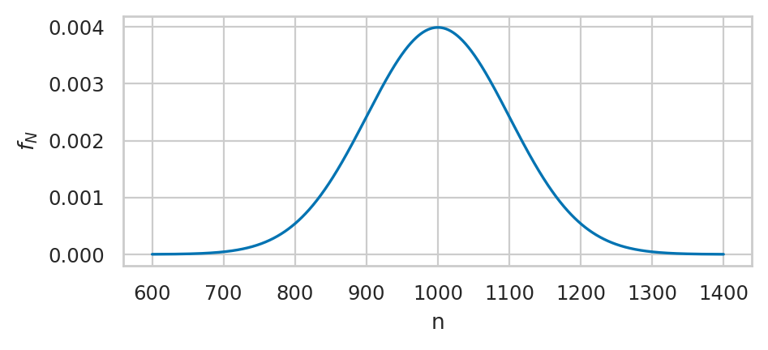
filename = os.path.join(DESTDIR, "plot_pdf_normal_mu1000_sigma100.pdf")
savefigure(ax, filename)
Saved figure to figures/stats/estimators/plot_pdf_normal_mu1000_sigma100.pdf
Saved figure to figures/stats/estimators/plot_pdf_normal_mu1000_sigma100.png
Sampling distribution of sample mean#
np.random.seed(43)
nbars = gen_sampling_dist(rvN, statfunc=mean, n=20)
ax = sns.histplot(nbars, stat="density", bins=100)
_ = ax.set_xlabel("$\overline{\mathbf{n}}$")
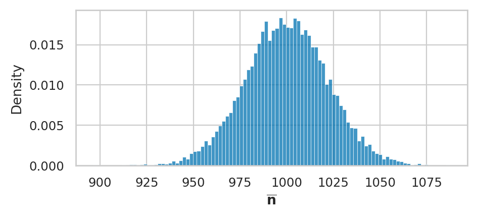
filename = os.path.join(DESTDIR, "sampling_dist_mean_n20_normal_mu1000_sigma100.pdf")
savefigure(ax, filename)
Saved figure to figures/stats/estimators/sampling_dist_mean_n20_normal_mu1000_sigma100.pdf
Saved figure to figures/stats/estimators/sampling_dist_mean_n20_normal_mu1000_sigma100.png
# expected observed
mu, np.mean(nbars)
(1000, 999.7597183686964)
# expected observed
sigma**2/20, np.var(nbars, ddof=1)
(500.0, 487.6015916377254)
Sampling distribution of sample variance#
np.random.seed(44)
nvars = gen_sampling_dist(rvN, statfunc=var, n=20)
ax = sns.histplot(nvars, stat="density", bins=100)
_ = ax.set_xlabel("$s^2_{\mathbf{n}}$")
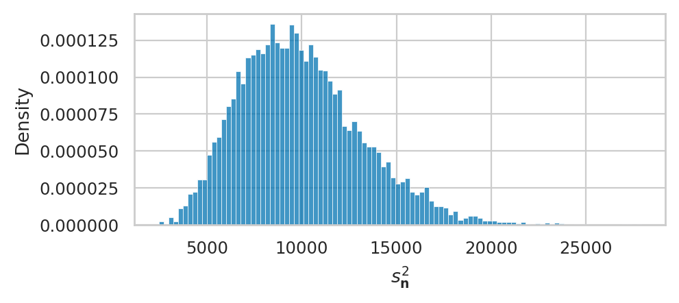
filename = os.path.join(DESTDIR, "sampling_dist_var_n20_normal_mu1000_sigma100.pdf")
savefigure(ax, filename)
Saved figure to figures/stats/estimators/sampling_dist_var_n20_normal_mu1000_sigma100.pdf
Saved figure to figures/stats/estimators/sampling_dist_var_n20_normal_mu1000_sigma100.png
# expected observed
sigma**2, np.mean(nvars)
(10000, 9939.922540353122)
Sampling distribution of sample median (optional)#
np.random.seed(44)
nmedians = gen_sampling_dist(rvN, statfunc=np.median, n=20)
ax = sns.histplot(nmedians, stat="density", bins=100)
_ = ax.set_xlabel("Median(${\mathbf{n}}$)")

Sampling distribution of 90th percentile (optional)#
def ninetypctile(sample):
return np.percentile(sample, 90)
ninetypctiles = gen_sampling_dist(rvN, statfunc=ninetypctile, n=30)
ax = sns.histplot(ninetypctiles, stat="density", bins=100)
_ = ax.set_xlabel("90$^\mathrm{th}$ percentile of ${\mathbf{n}}$")

Ground truth for estimates#
Let’s generate a particular sample to use in examples.
np.random.seed(47)
nsample20 = rvN.rvs(20)
nsample20
array([ 915.19905242, 1130.59063579, 1092.42079662, 1064.04118012,
894.52630171, 1179.77607151, 898.72132495, 1082.36233243,
970.53496466, 940.75294285, 860.62729413, 1110.41796717,
906.76597141, 905.68435632, 1043.66062317, 1079.495827 ,
1071.95331527, 1008.76622566, 867.72515937, 1005.17939788])
# [round(n,2) for n in nsample20]
mean(nsample20)
1001.460087023688
var(nsample20)
9574.586463484658
Ground truth for sampling distributions#
The sampling distribution graphs we saw above represent the true sampling distributions for the estimators \(\Mean\), \(\Var\), etc., generated from samples of size \(n=20\) from the population \(N \sim \mathcal{N}(\mu_N=1000, \sigma_N=100)\).
We can therefore use them as the “ground truth” for the approximations techniques we’ll learn about in the next two subsections.
Analytical approximation formulas#
Use probability theory formulas to come up with approximation formulas for certain sampling distributions.
Statistical assumptions#
LARGEn:
NORMAL:
EQVAR:
Sample mean estimator#
CLT
Verification of the CLT#
The true sampling distribution of the sample mean generated using simulation from thousands of samples of size \(n=20\).
n = 20
nbars = gen_sampling_dist(rvN, statfunc=mean, n=n)
ax = sns.histplot(nbars, stat="density", bins=100)
_ = ax.set_xlabel("$\overline{\mathbf{n}}$")
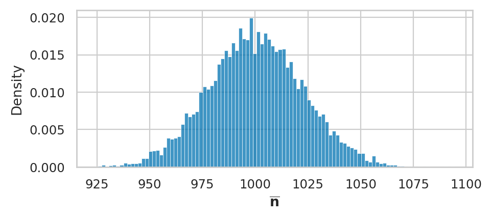
Let’s now superimpose a lineplot of the analytical approximation formula we obtain from the central limit theorem.
n = 20
meanNbar = rvN.mean()
seNbar = rvN.std() / np.sqrt(n)
meanNbar, seNbar, 100/np.sqrt(20)
(1000.0, 22.360679774997894, 22.360679774997894)
rvNbar = norm(meanNbar, seNbar)
xs = np.linspace(900, 1100, 1000)
sns.lineplot(x=xs, y=rvNbar.pdf(xs), ax=ax, color="m")
ax.figure
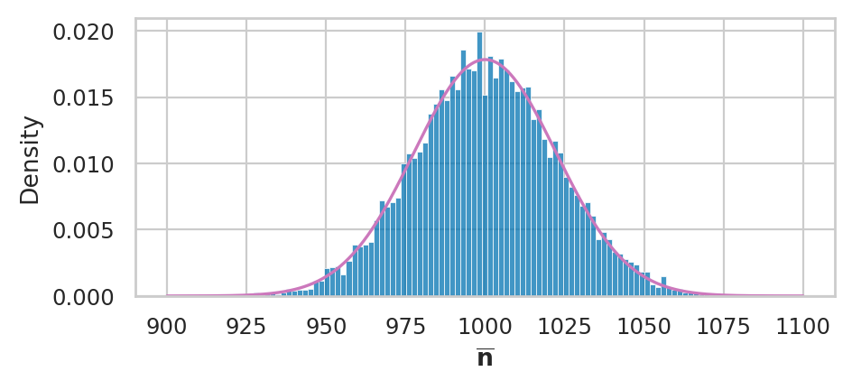
filename = os.path.join(DESTDIR, "sampling_dist_mean_exp_and_theory_n20_normal_mu1000_sigma100.pdf")
savefigure(ax, filename)
Saved figure to figures/stats/estimators/sampling_dist_mean_exp_and_theory_n20_normal_mu1000_sigma100.pdf
Saved figure to figures/stats/estimators/sampling_dist_mean_exp_and_theory_n20_normal_mu1000_sigma100.png
np.random.seed(51)
nsample7 = rvN.rvs(7)
nsample7
array([ 970.94968267, 1011.21280471, 1125.07951228, 863.91100289,
1009.99328823, 995.20088969, 964.37703097])
nvar = var(nsample7)
nstd = np.sqrt(nvar)
nstd
77.48623002231908
# the true population standard deviation
sigma
100
Normal approximation to the sample mean for small samples#
We start by running a simulation to obtain the true sampling distribution of the sample mean for samples of size \(n=7\) from the population \(N \sim \mathcal{N}(1000,100)\).
np.random.seed(48)
nbars7 = gen_sampling_dist(rvN, statfunc=mean, n=7, N=50000)
ax = sns.histplot(nbars7, stat="density", bins=100, color="m")

Next we generate a particular sample of size \(n=7\), which is analogous to the operation of a statistical analysis in the real world, when we don’t know the variance of the distribution.
np.random.seed(52)
nsample7 = rvN.rvs(7)
nsample7
array([1051.94758406, 873.12496192, 1024.04200262, 919.60425682,
1001.73440996, 1039.4393831 , 1127.91322641])
We now obtain the best normal approximation based on the estimated standard error sehat
that we computed from the data in nsample7.
nstd = np.sqrt(var(nsample7))
sehat = nstd / np.sqrt(7)
rvY = norm(rvN.mean(), sehat)
plot_pdf(rvY, ax=ax)
_ = ax.set_xlabel("$\overline{\mathbf{n}}$")
ax.figure
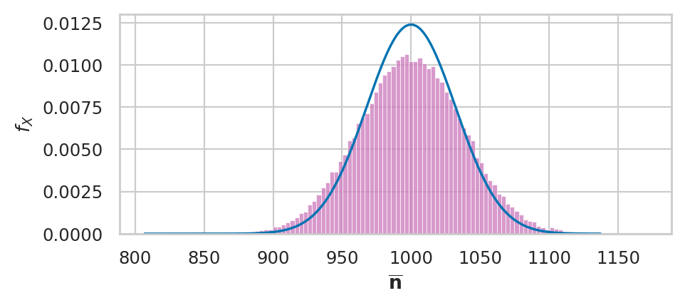
filename = os.path.join(DESTDIR, "sampling_dist_mean_rvN_and_N_approx_from_nsample7.pdf")
savefigure(ax, filename)
Saved figure to figures/stats/estimators/sampling_dist_mean_rvN_and_N_approx_from_nsample7.pdf
Saved figure to figures/stats/estimators/sampling_dist_mean_rvN_and_N_approx_from_nsample7.png
A better reference distribution#
Obtain Student’s \(t\)-distribution based on the estimated standard error sehat
that we computed from the data in nsample7.
from scipy.stats import t as tdist
df = 7 - 1 # (n-1) degrees of freedom
rvT = tdist(df, loc=rvN.mean(), scale=sehat)
plot_pdf(rvT, ax=ax, xlims=[800,1200])
_ = ax.set_xlabel("$\overline{\mathbf{n}}$")
ax.figure
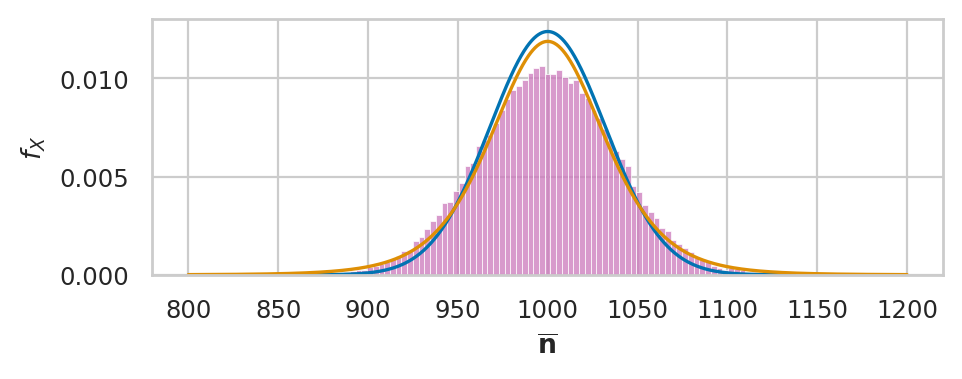
filename = os.path.join(DESTDIR, "sampling_dist_mean_rvN_and_T_approx_from_nsample7.pdf")
savefigure(ax, filename)
Saved figure to figures/stats/estimators/sampling_dist_mean_rvN_and_T_approx_from_nsample7.pdf
Saved figure to figures/stats/estimators/sampling_dist_mean_rvN_and_T_approx_from_nsample7.png
Sample variance estimator#
Chi-square
np.random.seed(44)
nvars = gen_sampling_dist(rvN, statfunc=var, n=20)
ax = sns.histplot(nvars, stat="density", bins=100)
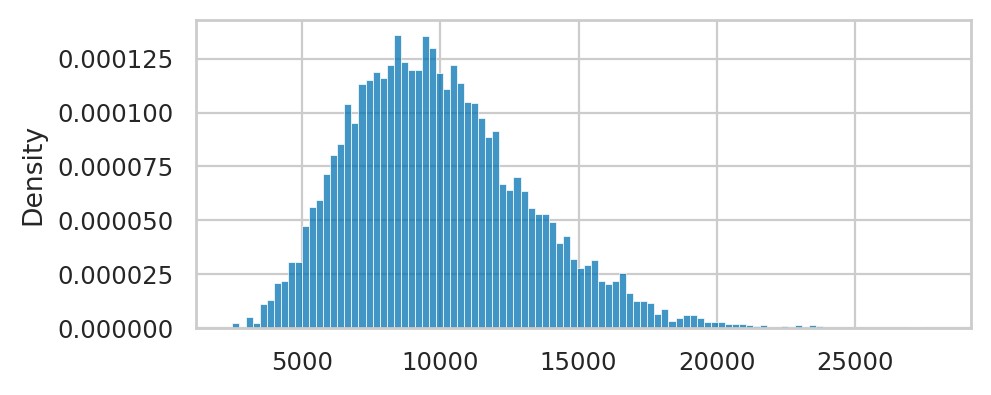
from scipy.stats import chi2
df = 20 - 1
sigma = rvN.std()
scale = sigma**2/(20-1)
X2 = chi2(df, loc=0, scale=scale)
plot_pdf(X2, ax=ax)
_ = ax.set_xlabel("$s^2_{\mathbf{n}}$")
ax.figure
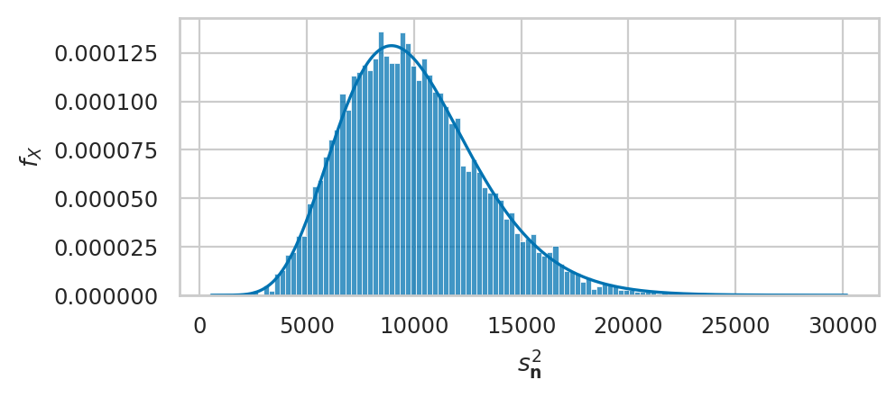
filename = os.path.join(DESTDIR, "sampling_dist_var_rvN_and_X2_approx_from_nsample20.pdf")
savefigure(ax, filename)
Saved figure to figures/stats/estimators/sampling_dist_var_rvN_and_X2_approx_from_nsample20.pdf
Saved figure to figures/stats/estimators/sampling_dist_var_rvN_and_X2_approx_from_nsample20.png
Difference between means estimator#
Consider two normally distributed random variables \(X\) and \(Y\): $\( X \sim \mathcal{N}\!\left(\mu_X, \sigma_X \right) \qquad \textrm{and} \qquad Y \sim \mathcal{N}\!\left(\mu_Y, \sigma_Y \right) \)$ that describe the probability distribution for two groups.
A sample of size \(n\) from \(X\) is denoted \(\mathbf{x} = (x_1, x_2, \ldots, x_{n})\)=
xsample, and let \(\mathbf{y} = (y_1, y_2, \ldots, y_{m})\)=ysamplebe a random sample of size \(m\) from \(Y\).We can compute the mean in each group: \(\overline{\mathbf{x}} = \Mean(\mathbf{x})\) and \(\overline{\mathbf{y}} = \Mean(\mathbf{y})\)
We can also compute the sample variance from each group: \(s_{\mathbf{x}}^2 = \Var(\mathbf{x})\) and \(s_{\mathbf{y}}^2 = \Var(\mathbf{y})\).
The value of the difference between means estimator is \(\hat{d} = \DMeans(\mathbf{x}, \mathbf{y}) = \overline{\mathbf{x}} - \overline{\mathbf{y}}\). The value \(\hat{d}\) is an estimate of the true different between population means \(\Delta = \mu_X - \mu_Y\).
Sampling distribution of the estimator dmeans#
Consider now the random samples \(\mathbf{X} = (X_1, X_2, \ldots, X_{n})\) and \(\mathbf{Y} = (Y_1, Y_2, \ldots, Y_{m})\). The sampling distribution of the different between means estimator is defined as $\( \hat{D} = \overline{\mathbf{X}} - \overline{\mathbf{Y}}. \)$
By definition, the sampling distribution of the estimator is obtained by repeatedly generating samples xsample and ysample from the two distributions and computing dmeans on the random samples. For example, we can obtain the sampling distribution by generating \(N=1000\) samples.
Theoretical model for the sampling distribution#
Let’s now use probability theory to build a theoretical model for the sampling distribution of the difference-between-means estimator dmeans.
The central limit theorem tells us the sample mean within the two group are $\( \overline{\mathbf{X}} \sim \mathcal{N}\!\left(\mu_X, \tfrac{\sigma_X}{\sqrt{n}} \right) \qquad \textrm{and} \qquad \overline{\mathbf{Y}} \sim \mathcal{N}\!\left(\mu_Y, \tfrac{\sigma_Y}{\sqrt{m}} \right). \)$
The rules of probability theory tells us that the difference of two normal random variables requires subtracting their means and adding their variance, so we get: $\( \hat{D} \sim \mathcal{N}\!\left( \mu_X - \mu_Y, \; \sqrt{\tfrac{\sigma^2_X}{n} + \tfrac{\sigma^2_Y}{m}} \right). \)$
In other words, the sampling distribution for the difference between means estimator \(\hat{D}\) has mean and standard error given by: $\( \mu_{\hat{d}} = \mu_X - \mu_Y \qquad \textrm{and} \qquad \stderr{\hat{d}} = \sqrt{ \tfrac{\sigma^2_X}{n} + \tfrac{\sigma^2_Y}{m} }. \)$
Example 1 (continued): difference between electricity prices#
Probability theory predicts the sampling distribution had mean …
eprices = pd.read_csv("../datasets/eprices.csv")
xW = eprices["West"]
xE = eprices["East"]
n = len(xW)
meanW = xW.mean()
stdW = xW.std()
m = len(xE)
meanE = xE.mean()
stdE = xE.std()
d = meanW - meanE
d
3.000000000000001
seD = np.sqrt(stdW**2/n + stdE**2/m)
seD
0.5972674401486562
Let’s plot the theoretical sampling distribution on top of the simulated data to see if they are a good fit.
def calcdf(stdX, n, stdY, m):
vX = stdX**2 / n
vY = stdY**2 / m
df = (vX+vY)**2 / (vX**2/(n-1) + vY**2/(m-1))
return df
df = calcdf(stdW, n, stdE, m)
df
12.59281702723103
from scipy.stats import t as tdist
rvD = tdist(df, loc=d, scale=seD)
plot_pdf(rvD, rv_name="D")
<AxesSubplot: xlabel='d', ylabel='$f_{D}$'>

The degrees of freedom of is obtained by the following formula.
Bootstrap estimation#
from statistics import mean
def bootstrap_stat(sample, statfunc=mean, B=5000):
"""
Compute the sampling dist. of the `statfunc` estimator
from `B` bootstrap samples generated from `sample`.
"""
n = len(sample)
bstats = []
for i in range(0, B):
bsample = np.random.choice(sample, n, replace=True)
bstat = statfunc(bsample)
bstats.append(bstat)
return bstats
Example 3 (continued): normal distribution#
np.random.seed(47)
nsample20 = rvN.rvs(20)
nsample20
array([ 915.19905242, 1130.59063579, 1092.42079662, 1064.04118012,
894.52630171, 1179.77607151, 898.72132495, 1082.36233243,
970.53496466, 940.75294285, 860.62729413, 1110.41796717,
906.76597141, 905.68435632, 1043.66062317, 1079.495827 ,
1071.95331527, 1008.76622566, 867.72515937, 1005.17939788])
nsample20.mean()
1001.460087023688
Bootstrapped sampling distribution of the sample mean#
# np.random.seed(48)
nsample20 = rvN.rvs(20)
nbars_boot = bootstrap_stat(nsample20, statfunc=mean)
ax = sns.histplot(nbars_boot, stat="density")
_ = ax.set_xlabel("$\overline{\mathbf{n}}$")
###
sns.kdeplot(nbars, ax=ax, bw_adjust=1.5)
<AxesSubplot: xlabel='$\\overline{\\mathbf{n}}$', ylabel='Density'>
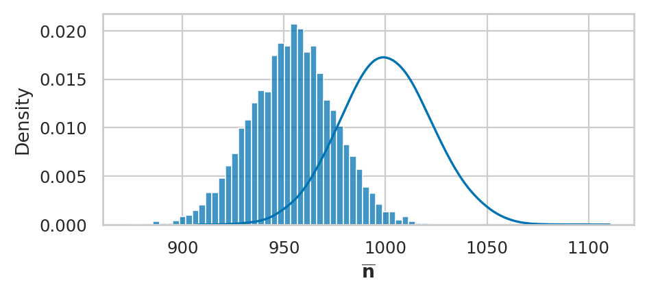
filename = os.path.join(DESTDIR, "bootstrap_dist_mean_n20_normal_mu1000_sigma100.pdf")
savefigure(ax, filename)
Saved figure to figures/stats/estimators/bootstrap_dist_mean_n20_normal_mu1000_sigma100.pdf
Saved figure to figures/stats/estimators/bootstrap_dist_mean_n20_normal_mu1000_sigma100.png
np.mean(nbars_boot), np.std(nbars_boot, ddof=1)
(954.0847363626671, 20.73830807426356)
Bootstrapped sampling distribution of the sample variance#
# def fixvar(sample):
# xbar = mean(nsample20)
# sumsqdevs = sum([(xi-xbar)**2 for xi in sample])
# return sumsqdevs / (len(sample)-1)
#np.random.seed(48)
nsample20 = rvN.rvs(20)
nvars_boot = bootstrap_stat(nsample20, statfunc=var)
ax = sns.histplot(nvars_boot, stat="density")
_ = ax.set_xlabel("$s^2_{\mathbf{n}}$")
###
df = 20 - 1
sigma = rvN.std()
scale = sigma**2/(20-1)
X2 = chi2(df, loc=0, scale=scale)
plot_pdf(X2, ax=ax)
_ = ax.set_xlabel("$s^2_{\mathbf{n}}$")
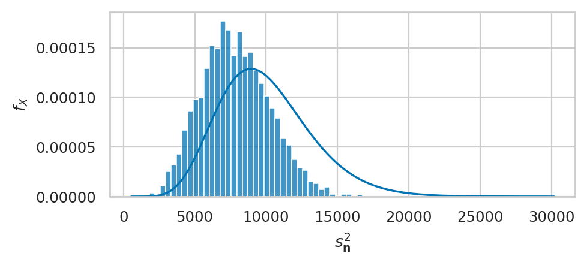
filename = os.path.join(DESTDIR, "bootstrap_dist_var_n20_normal_mu1000_sigma100.pdf")
savefigure(ax, filename)
Saved figure to figures/stats/estimators/bootstrap_dist_var_n20_normal_mu1000_sigma100.pdf
Saved figure to figures/stats/estimators/bootstrap_dist_var_n20_normal_mu1000_sigma100.png
np.mean(nvars_boot), np.std(nvars_boot, ddof=1)
(7876.628639189339, 2376.619604888538)
Bootstrapped sampling distribution of the difference between means#
eprices = pd.read_csv("../datasets/eprices.csv")
xW = eprices["West"]
xE = eprices["East"]
# compute bootstrap estimates for mean in each group
meanW_bstats = bootstrap_stat(xW, statfunc=np.mean)
meanE_bstats = bootstrap_stat(xE, statfunc=np.mean)
# compute the difference between means from bootstrap samples
dmeans_bstats = []
for bmeanW, bmeanE in zip(meanW_bstats, meanE_bstats):
d_boot = bmeanW - bmeanE
dmeans_bstats.append(d_boot)
sns.histplot(dmeans_bstats, stat="density", bins=30)
<AxesSubplot: ylabel='Density'>
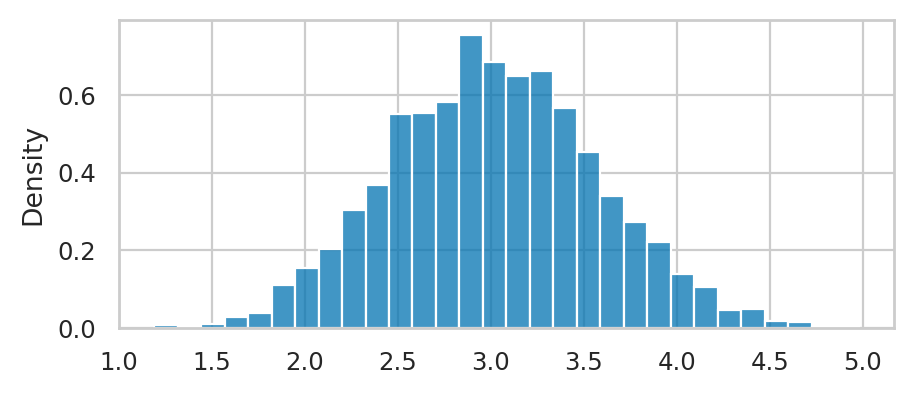
Estimator applications#
Parameter estimates
Effect size estimates
Confidence intervals
Test statistics
TODO: import one-liner explanation for each of these
Confidence intervals#
filename = os.path.join(DESTDIR, "confidence_intervals_mean_N50n20_normal_mu1000_sigma100.pdf")
from scipy.stats import norm
from plot_helpers import gen_samples
import seaborn as sns
import matplotlib.pyplot as plt
import warnings
palette = sns.color_palette(palette=["#ff0000", "#000000"])
N = 50
n = 20
# Generate N=50 samples of size n=20 from a normal dist
rvN = norm(1000,100)
np.random.seed(47)
samples_df = gen_samples(rvN, n=n, N=N)
samples_df.columns = range(0,N)
df2 = samples_df.melt(var_name="sample", value_name="n")
def confint(data):
"""
Compute 90% confidence interval.
Note: 1.729 = tdist(19).ppf(0.95)
"""
n = len(data)
mean = data.mean()
std = data.std(ddof=1)
se = std/np.sqrt(n)
return [mean - 1.729*se, mean + 1.729*se]
# Add new column to indicate if CI contains mean or not
for sidx in range(0,N):
sample = df2[df2["sample"]==sidx]["n"].values
C_L, C_U = confint(sample)
if C_L <= 1000 and 1000 <= C_U:
outcome = 1 # includes 1000
else:
outcome = 0 # doesn't include 1000
df2.loc[df2["sample"]==sidx,"success"] = outcome
with warnings.catch_warnings(), plt.rc_context({"figure.figsize":(9,3)}):
warnings.filterwarnings('ignore', category=UserWarning)
ax = sns.pointplot(x="sample", y="n", hue="success", data=df2,
errorbar=confint, palette=palette,
join=False, capsize=0.5, markers=" ", errwidth=1)
ax.set_ylabel("$\overline{\mathbf{n}}$")
ax.axhline(y=1000, color='b', label='Mean', linestyle='--', linewidth=1)
ax.legend([],[], frameon=False)
savefigure(ax, filename)
Saved figure to figures/stats/estimators/confidence_intervals_mean_N50n20_normal_mu1000_sigma100.pdf
Saved figure to figures/stats/estimators/confidence_intervals_mean_N50n20_normal_mu1000_sigma100.png
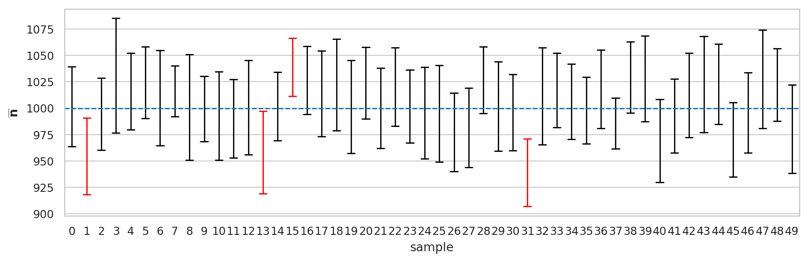
Analytical approximations#
Confidence interval for the sample mean#
n = 20
xbar = mean(nsample20)
xstd = np.std(nsample20, ddof=1)
sehat = xstd / np.sqrt(n)
from scipy.stats import t as tdist
rvT = tdist(n-1)
t_05 = abs(rvT.ppf(0.05))
t_95 = abs(rvT.ppf(0.95))
CI_mu_tdist = [xbar - t_05*sehat, xbar + t_95*sehat]
CI_mu_tdist
[975.1885651318993, 1045.583021493826]
Confidence interval for the sample variance#
n = 20
xvar = np.var(nsample20, ddof=1)
from scipy.stats import chi2
rvX2 = chi2(n-1)
x2_05 = rvX2.ppf(0.05)
x2_95 = rvX2.ppf(0.95)
CI_sigma2_tdist = [(n-1)*xvar/x2_95, (n-1)*xvar/x2_05]
CI_sigma2_tdist
[5223.357496252235, 15562.935206197804]
Bootstrap confidence intervals#
Confidence interval for the sample mean#
np.random.seed(48)
nbars_boot = bootstrap_stat(nsample20, statfunc=mean)
CI_mu_boot = [np.percentile(nbars_boot,5),
np.percentile(nbars_boot,95)]
CI_mu_boot
[976.5172687603595, 1042.374655048309]
# true
[np.percentile(nbars,5),
np.percentile(nbars,95)]
[963.6913925936195, 1037.764466936426]
Confidence interval for the sample variance#
np.random.seed(48)
nvars_boot = bootstrap_stat(nsample20, statfunc=var)
CI_sigma2_boot = [np.percentile(nvars_boot,5),
np.percentile(nvars_boot,95)]
CI_sigma2_boot
[4215.430503039237, 12031.108383721608]
# true
[np.percentile(nvars,5),
np.percentile(nvars,95)]
[5310.333761562281, 15828.681531295735]
Confidence interval for the sample median (optional)#
nmedians_boot = bootstrap_stat(nsample20, statfunc=np.median)
CI_median_boot = [np.percentile(nmedians_boot,5),
np.percentile(nmedians_boot,95)]
CI_median_boot
[978.2342492842921, 1052.5881305930454]
# true
[np.percentile(nmedians,5),
np.percentile(nmedians,95)]
[955.463349365222, 1045.3475276397405]
Confidence interval for the 90th percentile (optional)#
ninetypctiles_boot = bootstrap_stat(nsample20, statfunc=ninetypctile)
CI_ninetypctile_boot = [np.percentile(ninetypctiles_boot,5),
np.percentile(ninetypctiles_boot,95)]
CI_ninetypctile_boot
[1072.2722143940018, 1149.9386789312603]
# true
[np.percentile(ninetypctiles,5),
np.percentile(ninetypctiles,95)]
[1073.100079722891, 1169.462270540716]
Explanations#
Unbiased estimator of the sample variance#
np.random.seed(16)
nvars = gen_sampling_dist(rvN, statfunc=var, n=20)
ax = sns.histplot(nvars, stat="density")
_ = ax.set_xlabel("$s^2_{\mathbf{n}}$")
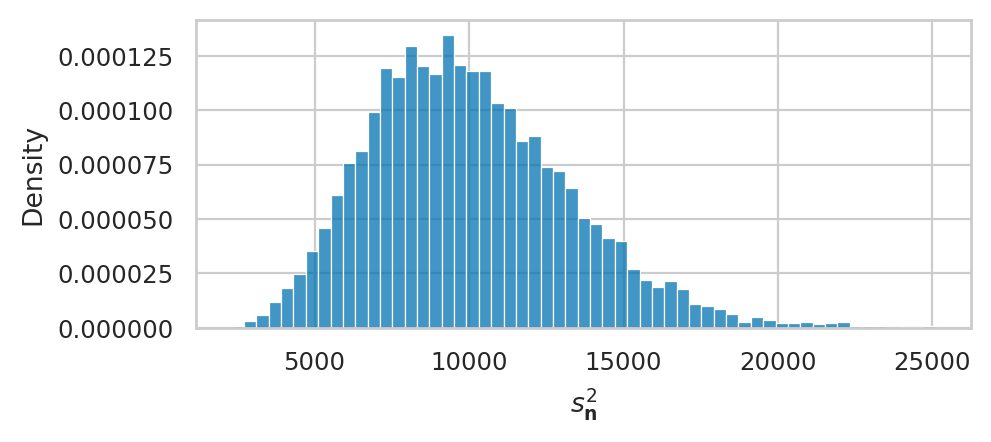
This is an unbiased estimator of the sample variance, since its expected value equals the population variance: \(\mathbb{E}[S^2] \approx \sigma^2 = 100^2 = 10000\).
np.mean(nvars)
10029.611947721529
Biased estimator of the sample variance#
Let’s see what happens if we use the denominator \(n\) instead of \((n-1)\) for the sample variance calculation.
def s2tilde(sample):
xbar = mean(sample)
sumsqdevs = sum([(xi-xbar)**2 for xi in sample])
return sumsqdevs / len(sample)
np.random.seed(16)
s2tildes = gen_sampling_dist(rvN, statfunc=s2tilde, n=20)
ax = sns.histplot(s2tildes, stat="density")
_ = ax.set_xlabel("$\\tilde{s}^2_{\mathbf{n}}$")
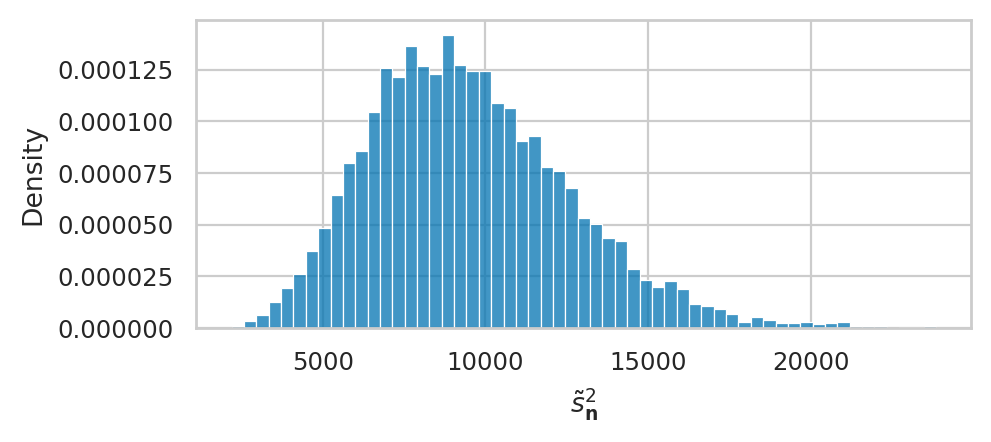
The expected value of this estimator \(\mathbb{E}[\tilde{S}^2]\) does not equal the population variance \(\sigma^2 = 100^2 = 10000\).
np.mean(s2tildes)
9528.131350335454
We can correct the bias in this estimator by simply using the normalization factor \((n-1)\) in the formula instead of \(n\).
Discussion#
Discovering estimator formulas#
Method of moments#
from scipy.stats import norm
norm.fit(nsample20, method="MM")
(1010.3857933128627, 88.72722772438432)
from scipy.stats import expon
lam = 0.2
esample20 = expon(0, 1/lam).rvs(20)
expon.fit(esample20, floc=0, method="MM")
(0, 6.022549491872384)
Maximum likelihood estimation#
norm.fit(nsample20, method="MLE")
(1010.3857933128627, 88.72722772438432)
expon.fit(esample20, floc=0, method="MLE")
(0.0, 6.0225667286941285)